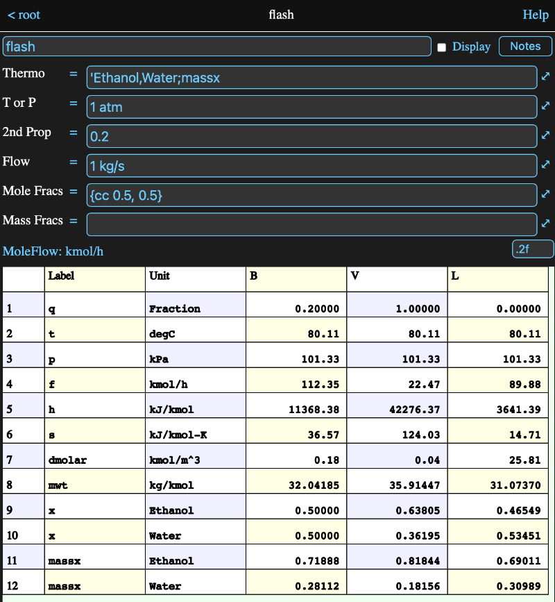

Overview
This version of Math Minion has incorporated some of the capabilities of the CoolProp property package to enable this tool to perform flash and property calculations using CoolProp's HEOS backend. Hence the version name "CoolMM".
Information View
Below is an image of the information view for a dew point flash of a mixture of ethanol and water. There are six input fields, which are explained in the sections below, and a table showing the calculated properties of the bulk fluid and the vapour and liquid phases if it is two phase. The table can be dragged around like other tables.

As it would appear if the info view weren't expanded:
Thermo Input
The thermo field formula should resolve to a string which is a comma or ampersand separated list of the fluids (i.e. compounds) that are included in the flash. At this time, Math Minion always uses the CoolProp HEOS backend for calculation. A list of the available fluids can be obtained from the fluids parameter of any flash, even if it has no inputs. For example if you create a flash named feed, then an expression with the formula:
feed.fluids
will have a column array of fluid names as its value.
The following properties are always calculated and reported in the info view table:
- q - vapour fraction
- t - temperature
- p - pressure
- f - molar flow rate
- h - Mole-based enthalpy
- s - Mole-based entropy
- dmolar - Mole-based density
- mwt - molecular weight
- x - Mole fractions
Additional properties (see the list in the formula parameters section) can be requested by appending '::' to the end of the thermo string, followed by a comma or ampersand list of the properties. For example in the flash above the thermo is defined by the formula:
'Ethanol,Water::massx
The thermo definition ignores all white space, so you can use spaces, tabs and newlines if you wish.
Note that the thermo definition for a flash is available as a parameter of the flash, so other flashes making use of its results can easily reuse the same definition.
T or P Input
A flash requires two intensive properties in order to perform its calculation and Math Minion requires that one of those be temperature or pressure. Thus this formula must resolve to one of those, based on its conversion unit type.
Second Property Input
The second property can be one of the following:
- vapour fraction
- temperature
- pressure
- Mole-based enthalpy
- Mole-based entropy
except it of course can't be the same as the T or P Input property. As with the T or P formula, the type of property is determined by its conversion unit type.
Flow Input
A flow value isn't needed to perform a flash, but if it is provided, the flows for the vapour and liquid phases will be calculated if the result is two phase.
The flow formula can resolve to either a molar flow or a mass flow, based on the unit conversion type.
You can also supply an array with the same number of flows as there are components. In this case the flows will be normalized into either mole or mass fractions and used as the bulk composition. The sum of the flows will become the bulk flow value, again in either mole or mass terms depending on the unit conversion type.
Composition Input
The composition can be specified in either mole or mass fractions. Because both have the unit conversion type of Fraction, they have seperate input formulas. The composition should resolve to an array of the same length as the number of components defined in the thermo definition.
Formula Parameters
Parameters that can be accessed in the form a.b where a is the tool and b is the parameter
- thermo - the thermo definition for the flash (i.e. components and extra properties to be calculated.
- fluids - returns a column array of the fluids available in CoolProp
- envelope - returns a table with temperature a pressure columns representing the phase envelope for the fluid.
Note: all of the following parameters can be followed by a dot and a phase character, where
- b = the bulk phase
- v = the vapour phase
- l = the liquod phase
If the phase qualifier is not added, the return value will be a table with one column for each existing phase. If the fluid is single phase, only the bulk column will exist.
Note that only properties that have been included in the thermo definition are calculated.
- q - vapour fraction
- t - temperature
- p - pressure
- f - molar flow rate
- massf - mass flow rate
- h - Mole-based enthalpy
- s - Mole-based entropy
- dmolar - Mole-based density
- mwt - molecular weight
- x - Mole fractions
- massx - Mass fractions
- cpmolar - Mole-based constant-pressure specific heat
- cp0molar - Mole-based ideal-gas constant-pressure specific heat
- cvmolar - Mole-based constant-volume specific heat
- umolar - Mole-based internal energy
- gmolar - Mole-based Gibbs energy
- cpmass - Mass-based constant-pressure specific heat
- cp0mass - Mass-based ideal-gas constant-pressure specific heat
- cvmass - Mass-based constant-volume specific heat
- dmass - Mass-based density
- umass - Mass-based internal energy
- gmass - Mass-based Gibbs energy
- tmin - Minimum temperature
- tmax - Maximum temperature
- pmin - Minimum pressure
- viscosity - viscosity
- conductivity - Thermal conductivity
- surfacetension - surface tension
- prandtl - surface tension